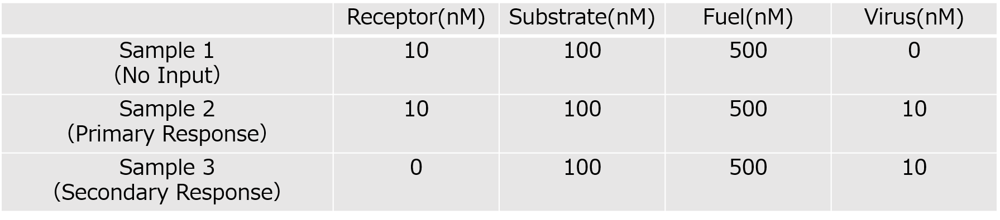

Result
Simulation
Object
We confirmed the behavior of our DNA circuitry with simulations.
Method
We used visual DSD to simulate DNA circuits.
We simulated three types of initial solutions (Table 1).
Sample 1 is to check if leakage occurs without input, Sample 2 is to check the primary response and Sample 3 is to check the secondary response.
Normally, the waste generated in the primary response is present in the solution in the secondary response.
However, in this design, the waste is fully complementary duplex and hardly reacts with other DNA strands,
so it is assumed that there is no waste when simulating the secondary response.
Table.1
Sample1: No input (virus). Confirming that no leakage occurs in the state. Sample2: A state in which a primary response occurs. Input concentration is less than "receptor". Sample3: Secondary response occurs. There is no "receptor" because the primary response has already occurred.
Result & Discussion
The main text.The main text.The main text.The main text.The main text. The main text.The main text.The main text.The main text.The main text. The main text.The main text.The main text.The main text.The main text. The main text.The main text.The main text.The main text.The main text. The main text.The main text.The main text.The main text.The main text.